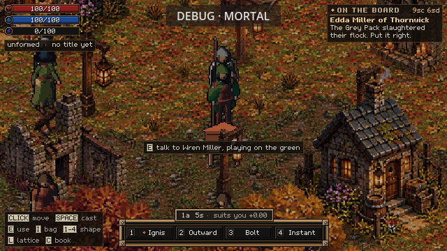
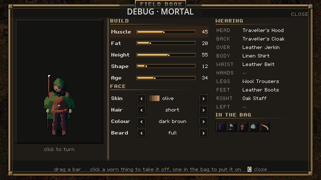
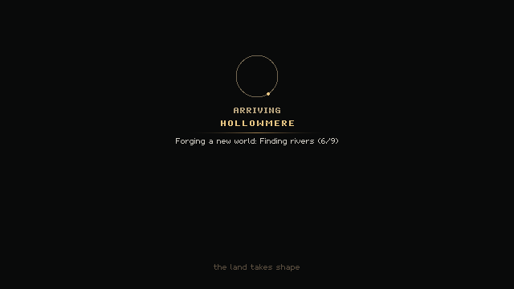
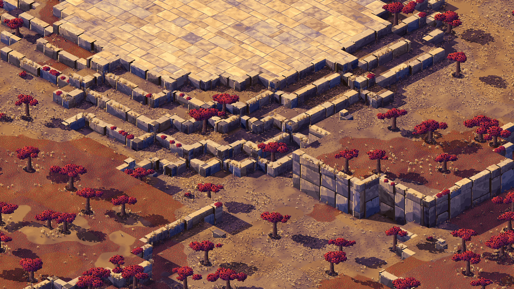
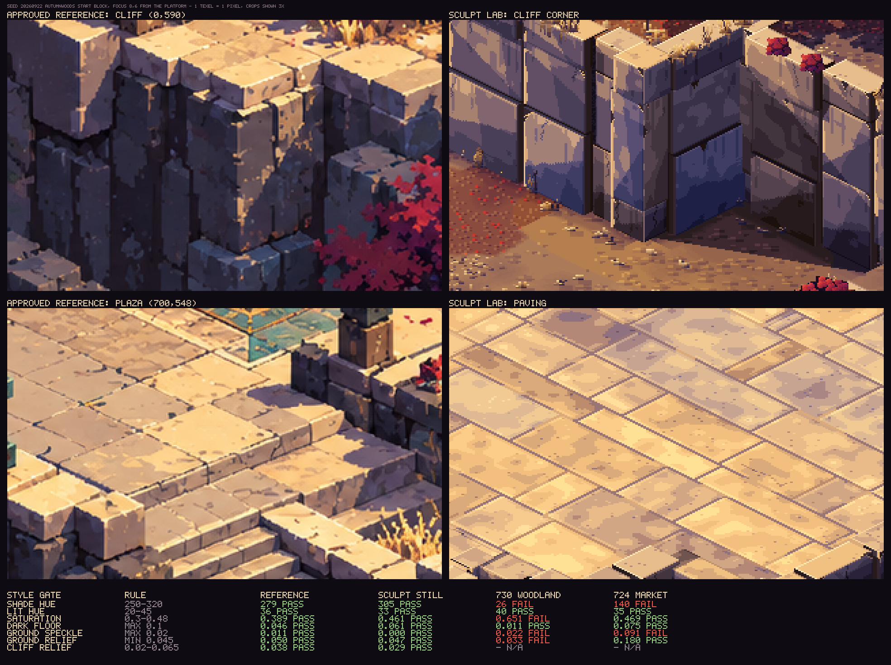

Day 12: kept saves, a loading card and a style on trial
3 October 2026 · Day 12
Your character now survives a save: continue a game and your body, your face and the clothes you had on come back with you. A loading card replaces the frozen window while the world opens, the computer now plays the real world before risky changes land, and a new art style is on trial, drawn entirely by our own code. One honest number sits under all of it: none of the 48 biomes is finished yet.

A fresh capture from today's build, on a newly forged world. The DEBUG button at the top only appears in builds run from the source.
You come back as you left
Until this week a save kept the world and your bag, but not you. Everything your body had taken in, its rings, motes, vows and talents, reset when you restarted. So did a changed face, and the clothes you were wearing could vanish or come back as two copies. Saves now keep all three: the body, the look and what you wear.

Everything on this page is now saved with your game: the build, the face and every worn item.
There is a quieter promise underneath. If an older copy of the game finds a body saved by a newer one, it now refuses to open it and says why, instead of treating it as damaged, falling back to an older backup and then saving over your newer progress. One case of this is still open: a body holding vows or talents that the older copy has never heard of.
Not everything is kept yet. Things left lying on the ground, the chests you opened in a dungeon and a boss you killed still come back after a restart, and the village is rebuilt from scratch on every launch. That is the next round of save work.
A card instead of a frozen window
Opening the forged world used to happen before the window drew a single frame, and in a build run from the source the window could sit blank for more than two minutes. Now the world opens in the background while a card says what is happening: arriving at Hollowmere, then each stage of the forge as it runs, with a mote circling a ring.

The card while a new world is forged, captured at its tenth frame.
That fixed the first half of the wait. The second half is still there: once the card is done, the game sets out the land and its people, and while it does the window stops again. On this morning's capture the world itself was forged and opened in under two seconds, and then setting up held the window for 84 seconds.
What went wrong
Most of those 84 seconds belonged to the travelling merchants. To plan a route, the game asks of each tile whether something stands on it, and it answered by checking every one of the twelve thousand trees and rocks in the region, about 165,000 times per launch. From the source that froze every launch for over a minute; in a finished build it was still around ten seconds. A fix that files the trees and rocks by tile, so the routes are placed in milliseconds, is written and waiting for review.
The automatic play-tests had their own trouble. Several pieces of work run on one shared Mac, and their game windows open on the same desktop. The game ignores keys while its window is not the focused one, so whenever another window took focus a test would fail by the dozen, in nonsense patterns: pressing C failed to open the character panel, and pressing it again closed it just fine. On the Mac the tests now assume focus. A real mouse drifting across a test window can still disturb its click and aim checks; a change that has the game ignore the real mouse while a test drives it is in review.
The computer plays first
The game already had a self-test: it opens a window, presses real keys, and checks that things happen. Now there is a second tier that plays the default game the way a player starts it, on the real forged world. It walks a short journey: move, harvest, cast, step through a dungeon portal and come back to the same spot. It does it all again with touch controls. Then it saves, quits, relaunches, continues, and checks that the save came back.
It does not run on every change. A run takes between a quarter and half an hour, so it is asked for on changes that touch starting the game, saving, the controls or the scenes, and it also runs once a week on the main line of work and for every release. It runs on the Mac rather than on paid cloud machines.
Smaller things that landed
The bag now works from the keyboard or a gamepad: move between slots, lift and place, split a stack. Splitting with keys or a pad had looked as though it worked, and the bag even said so, but the counts never changed. It now really makes a new stack, in the empty slot nearest the old one, and a full bag says there is no room instead of pretending.
Merchants arrived on 1 October. A trader buys and sells with real coins, and can run out of stock or money. A wandering one travels between pitches with a walker, pack animals, a bison cart or a giant snail, and the paths they use wear into the ground. Their figures are still placeholders, and they want a hands-on pass.
Forty-eight biomes, none finished
The forge knows 48 biomes, and this week a report started saying, biome by biome, what each one really has in the game, measured from real forged worlds rather than from the catalogue. The headline is that none of the 48 is fully playable yet. On the default world, 42 of the 44 land biomes appear somewhere, but only 8 reach the starting region you can actually walk. Some read as something else in play: the Hushdowns come out as 92% plain grass, the Glasslands as 61%. And one set of art draws them all, so every land biome gets the same tree, the same bush and the same rock.
That is not news anyone enjoys, but it is the honest starting line, and the report will show each biome move as the work lands.
A style on trial
The art direction being tested is called Sculpted Pixels: carved stone terraces, warm light, violet shadows and deep darks, judged against one approved reference picture. Earlier attempts were scenes built by hand. The real question is whether our own code can draw the style for any piece of a generated world, so it can cover every biome.
The first answer is a style lab. It takes one real piece of the forged world, the paved start platform of an autumn woodland on its stepped terraces, and draws it in the style from code alone. A set of measurements checks it against the reference: the colour of the shadows and of the light, the saturation, how deep the darks go, and how rough the ground and cliffs are. The second round passes every one.

An offline still from the style lab, not a capture from the game. The trees are placeholders.

Left, the approved reference; right, the lab, both enlarged three times. The table underneath is the measurement each picture is held to.
Passing the numbers is not the same as looking right. Up close it is near in colour and light, and the paving is plainly the same family as the reference plaza. The cliffs are much nearer than in the first round, but their blocks are still clean boxes where the reference's corners are broken, and the deep cracks between stones are too few. The trees are round-topped stand-ins. As a whole frame it reads as a relative of the reference, not yet a still from the same game.
Whether it is close enough to keep going is a verdict for the game's creator, and it is still pending. If it is a yes, the next step is to finish the autumn woodland properly, with real trees, broken stone, water edges and stairs, then try five more biomes, and only then put it into the game. If it is a no, this route stops, and we would rather drop the style than fake it.
Where the work is pointed
On 2 October the direction was set: desktop first. Phones are not dropped, but they wait, because a style this detailed may not read on a small screen. Play-testing now means walking the generated world as an immortal, looking hard at what the forge makes, before testing fights and features. The same day an outside audit put the order of work as saves first, then a real test of the engine, then the rest; this week's saves and play-tests are those first two steps.
Next
Saves, round two: dungeon chests and bosses that stay as you left them, and a village that is kept rather than rebuilt. A play-testing mode: immortal, with the animals leaving you alone, and quick starts in any biome; it is written and in review. And the vow card, so that vows can be taken in play; once it exists, the plan is for a new game to start you as a novice.
End of day 12: you come back as you left, the window talks to you while the world is forged, and a new style waits on a yes or a no.